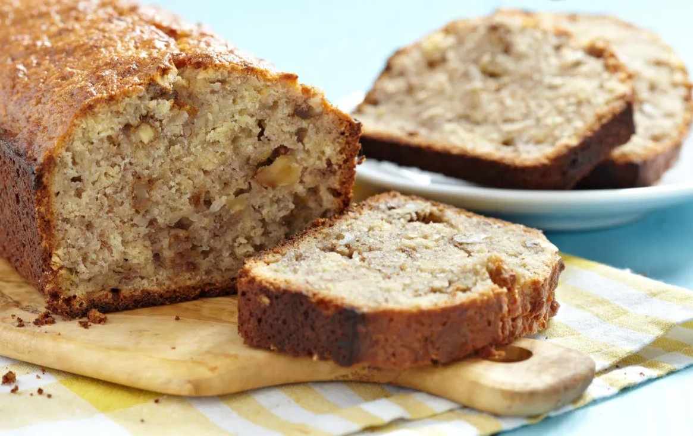

Pan de Banana con Nueces

Ingredientes:
225g de harina
1/2 taza de aceite vegetal
100g de azucar
2 huevos
2 bananas maduras
1 cucharadita de vainilla
1 cucharadita de polvo de hornear
1 cucharadita de bicarbonato
1 cucharadita de canela
Una pizca de sal
Nueces picadas a gusto
Preparación:
En un bol colocar las bananas y pisarlas hasta formar un puré.
Agregar los huevos, el aceite y la vainilla. Mezclar.
En un recipiente aparte mezclar los secos: el harina, la sal, la canela y el polvo de hornar. Mezclar.
Unir con la mezcla de banana hasta formar una masa húmeda.
Por último agregar las nueces.
Llevar al horno en una budinera enmantecada por 55 minutos a 180°.
© 2024 Mi Blog de Cocina. Todos los derechos reservados.